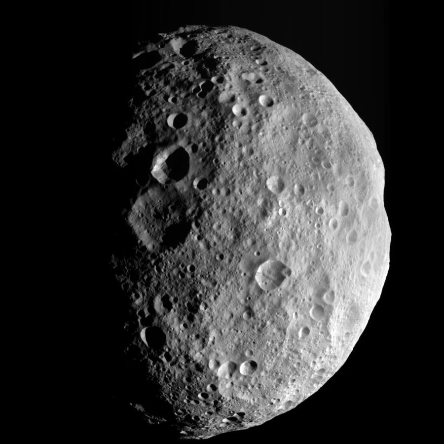

Asteroides são corpos rochosos ou metálicos, bem menores que os planetas, que também giram ao redor do Sol. A maioria fica no Cinturão de Asteroides, entre as órbitas de Marte e Júpiter. São restos da formação do Sistema Solar e têm formatos irregulares e tamanhos muito variados. A foto mostra Vesta, o maior asteroide, registrado pela sonda Dawn da NASA.
Cerca de -73 °C na superfície de um asteroide típico
De menos de 10 metros até 530 km de diâmetro (Vesta)
Variável: o Cinturão de Asteroides fica a centenas de milhões de km, mas alguns asteroides passam perto da Terra